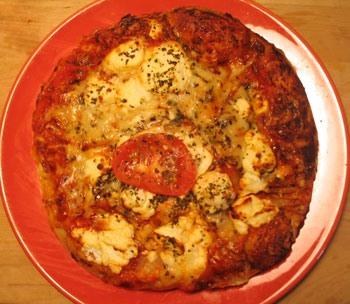

Whole Foods Market focaccia
Whole Foods Market is a labyrinth of price contradictions. You can go in there and blow a few hundred bucks on groceries for a week if you’re not careful, or you can be extremely careful like I am and walk out of there with bargains every time. Here is a short list of items that I buy almost exclusively from Whole Foods:
- Olive oil (house brand), $6.99/liter
- Ice cream (house brand), $3.99/half gallon
- Frozen fruit (I can’t remember the price, but the house brand is a good buy)
- Sausage (which I have blogged about several times—the chicken sausages end up being around a dollar a piece and have cool flavors like blueberry)
- Butter. The house brand of butter is good and cheaper than Breakstone’s or Land-o-Lakes.
My new favorite weekend lunch item when I don’t feel like making a sandwich is the Whole Foods focaccia from the hot food area, an absolute steal at $3.29.

I can barely eat half of it, so I send the leftover for n8’s lunch. If I worked around Union Square and were lazy, I’d probably eat these twice a week. This one was covered with delicious cheese and oil, and it was hot out of the oven. It reminded me of a similar item I used to make at Einstein Bros. Bagels, where I was a “baker” at the age of 16 (baking at Einstein’s = pulling bagels out of freezer, proofing them, seeding them, then baking them). What could be better than oily melted cheese on hot flaky dough? This is such a better deal than the overpriced-per-pound items in the back of the store.
Comments
Their house brand balsamic vinegar is good, too. Also the 365 pasta sauces. And they have a canned crushed tomatoes with rosemary that I like to use in pot roast or beef stew.
Mommy
Oh yeah, I got their magnum of balsamic like a year ago and I’m still using it! Haven’t tried the tomatoes yet, but I avoid the pasta sauce because it has sugar in it. Good price though.
I was in WF today and they were giving out samples of the olive and herb focaccia; I know you’re not crazy about olives and I didn’t like them either when I was your age but now I love them and the focaccia was yummy!
But I’ve gotten over my olive issues!
I was a cashier at Einstein’s when I was 16! The most “baking” I did was icing the cinnamon rolls. The rest was fixing sandwiches and drinks. Those 6-6 shifts were intense.
Seems like they mostly hire 16-year-olds. I never had to do 6-6. They always had me 6-2 or 7-3.
Add a comment